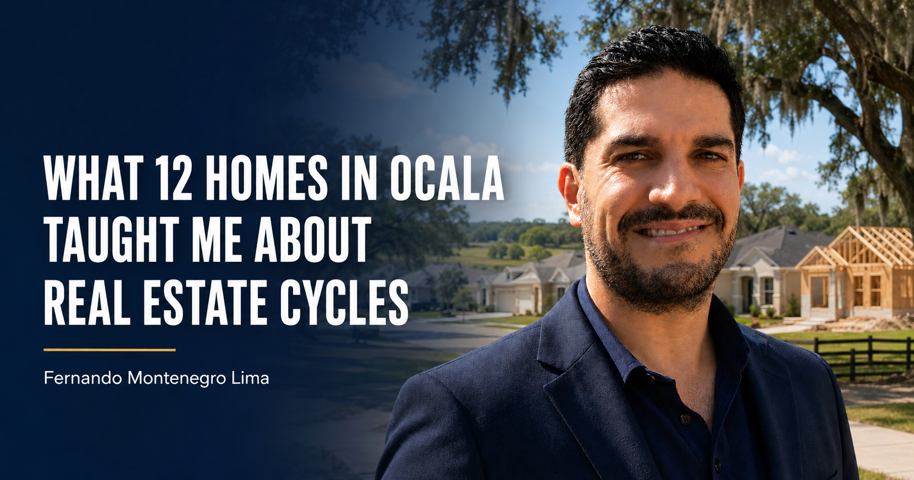

What 12 Homes in Ocala Taught Me About Real Estate Cycles
A good product can face a difficult cycle.

When I arrived in Orlando in December 2024, Ocala was considered one of Florida’s next real estate opportunities.
As often happens, investors followed investors and builders followed builders. Supply increased just as high financing costs weakened affordability and slowed absorption.
At the time, I met an investor holding 12 newly built homes between 1,900 and 2,400 square feet. He was concerned about the market.
My advice was simple: the product was not necessarily wrong. The mismatch was between pricing, financing conditions and timing. Because he was not overleveraged, he had the option to wait instead of accepting distressed prices.
Fourteen months later, he told me: “I sold everything.”
I had also considered building homes in Ocala, but decided not to proceed. At that moment, the relationship between borrowing costs, construction costs, achievable sales prices and risk did not make sense.
That is the lesson: a good product can face a difficult cycle. The greatest risk is often not temporary demand—it is expensive leverage that removes your ability to wait.
Real estate requires more than enthusiasm. It requires understanding economics, financing, absorption, cost basis and timing.
Would you have waited or reduced prices?
Evaluate the Cycle.
Connect with FGS Capital regarding development economics and investment strategy.
Contact FGS